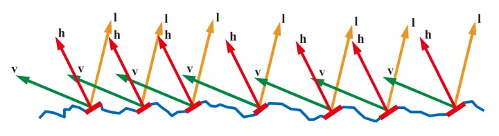
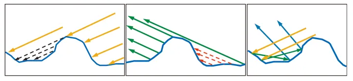
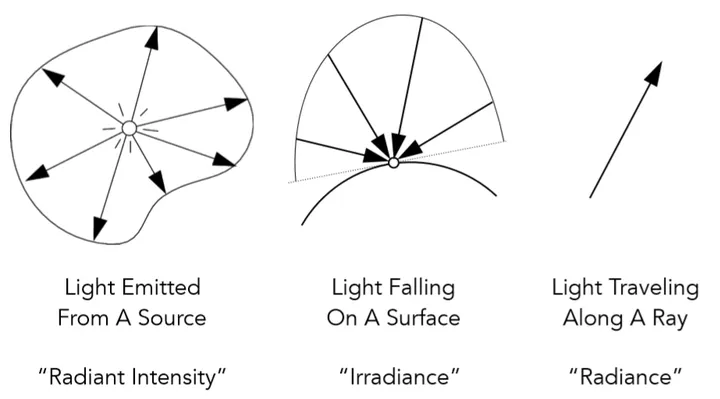

本文基于基于物理的渲染（PBR）白皮书】（一） 开篇：PBR核心知识体系总结与概览来布局内容，在此基础上加上自己的理解完成
PBR的范畴，PBR不仅仅是镜面反射采用微平面Cook-Torrance模型，Frostbite在SIGGRAPH2014的分享《Moving Frostbite to PBR》中提出基于物理渲染的范畴，有三部分组成
PBR的总概念有
微平面理论是将物体表面建模成无数微观尺度上有随机朝向的理想镜面反射的小平面microfacet，实践中表面的不规则性用粗糙度贴图或高光度贴图来表示
出射光线的能量永远不能超过入射光线的能量
光线以不同角度入射会有不同的反射率，相同的入射角不同的物质也会有不同的反射率
大多数非金属的F0是\(0.02 \sim 0.04\)，大多数的金属的F0范围是\(0.7 \sim 1.0\)
光照计算必须在线性空间完成，如shader中的带gamma的贴图可能需要转换成线性空间
描述物体表面属性的贴图如粗糙度、高光、金属等必须保证是线性空间的
是将宽范围的照明级别拟合到屏幕有限色域内的过程
基于HDR渲染出来的亮度值会超过显示器能够最大显示亮度，就需要将光照结果从HDR映射到LDR
现实中的物理中物质可分为三类
渲染中一般只对金属导体和非金属绝缘体，前者具有彩色的镜面反射颜色，后者具有单色或灰色镜面反射颜色
反射现象，光在均匀介质中是沿直线传播的，光在两种物质分界面上改变传播方向又返回原来物质中的现象。两种反射：
光学平面，指平面的粗糙度(即表面的起伏)远小于波长。表面对光的散射比较小，绝大部分光被反射(镜面)、透射(介质)、被吸收。简而言之，光学平面可以有效降低光散射，至于光的透射还是反射等取决于具体材料。
非光学平坦表面Non-Optically-Flat Surfaces,可以看成是微小的光学平面表面的大集合，表面上的每个点都以略微不同的对入射光反射等，最终的表面外观是许多不同微小平面的聚合结果。
漫反射和次表面散射它们是相同的物理现象，本质都是折射光的次表面散射的结果，唯一的区别是相对于观察尺度的散射距离，即像素区域与散射距离的关系来确定，如果像素大于光线离开表面之前所经过的距离，可当场漫反射；像素小于散射距离，则当场次表面散射。
出于着色渲染的目的，通常使用统计方法去处理这种微观上的几何现象。
微平面理论将微观几何microgeometry建模为微平面microfacet的思路，用来描述非光学平坦表面的表面反射。理论假设的是微观几何的尺度小于观察尺度，但大于可见光波长的尺度。该理论在2013以前仅用于推导单反射single-bounce表面反射的表达式，现在开始慢慢地实践多次反弹表面反射的一些探讨。
每个微平面的表面点将给定进入的光反射到单个出射方向，取决于微观几何法线\(\mathcal{m}\)的方向，在计算BRDF项时，指定光方向\(\mathcal{l}\)和视图方向\(\mathcal{v}\)，这样可以看成只有那些恰好可以将\(\mathcal{l}\)反射到\(\mathcal{v}\)的那些平面有助于BRDF值，其他方向有正有负，积分后就抵消掉。如下左侧图所示，只有\(\mathcal{m}=\mathcal{h}\)时，某个方向的光对应的视图方向的值就是这些的累计值。
 
上图右侧所示，即使\(\mathcal{m}=\mathcal{h}\)时，也有些复杂的情况，被\(\mathcal{l}\)方向shadowing阴影遮蔽，\(\mathcal{v}\)方向掩蔽masking，microfacet模型理论忽略了一些反射，或多次次表面反射的情况，从结果上来看是可接受的。
根据光学的物理学原理，渲染方程描述了光能在场景中的流动，其理论是能量守恒，而各种各样的渲染计算都是只是这个理论结果的一个近似。
是渲染中不可感知的抽象，是指导实现渲染的总纲。在一个特定的位置和方向，出射光\( \mathcal{Lo} \)是自发光\( \mathcal{Le} \)与反射光线之和，反射光线本身是各个方向的入射光\( \mathcal{Li} \)之和乘以表面反射率以及入射角。
某一点p的渲染方程，可以表示为
$$ Lo = Le + \int_{\Omega}{f_{r} \cdot L_{i} \cdot (w_{i} \cdot n) \cdot dw_{i}} $$
其中\(Lo\)是p点的出射光亮度; \(Le\)是p点发出的光亮度; \(f_{r}\)是p点入射方向到出射方向光的发射比例，即BxDF，一般是BRDF；\(L_{i}\)是p点入射光亮度；\((w_{i} \cdot n)\)是入射角带来的入射光衰减；\(\int_{\Omega}{...dw_{i}}\)是入射方向半球的积分(可理解为无穷小的累加和)。
在实时渲染中，常用反射方程The Reflectance Equation,是渲染方程的简化版本，或者说是一个特例。
$$ Lo = \int_{\Omega}{f_{r} \cdot L_{i} \cdot (w_{i} \cdot n) \cdot dw_{i}} $$
BxDF指几种双向分布函数的一个统一表示。
迪士尼原则的BRDF的提出奠定了游戏和电影行业的PBR的方向和标准，由于其高度的通用性，将材质复杂的物理属性用非常直观的少量变量表达了出来。
其核心理念是着色模型是艺术导向Art Directable的，而不一定要是完全物理正确physically correct的，并对微平面BRDF的各项都进行了严谨的调用，并提出了清晰明确而简单的解决方案。
基于此理念，得到一个颜色参数和描述的标量参数
2015年迪士尼动画工作室在BRDF基础上修订，提出了Extending the Disney BRDF to a BSDF with Integrated Subsurface Scattering。blender实现了Disney的BSDF。
漫反射BRDF模型，分为传统型和基于物理型：传统主要是Lambert；基于物理的有多种。
镜面反射BRDF模型，目前游戏行业最主流的模型是基于微平面理论的Microfacet Cook-Torrance BRDF。怎么用物理量精确描述光线？这就要引入物理模型了。
在进入物理模型前先介绍一下立体角，先从二维的弧度radians定义说起，\(\theta=\frac{l}{r}\)，三维的立体角steradians定义是\(\Omega=\frac{A}{r^2}\)。确定球体空间中的一个方向\(\theta,\phi\),在这两个角度上分别增加一个微分值，其中\(rd\theta\)是微分面积元的高，\(rsin\theta d\phi\)是微分面积元的宽,则有
$$ d\omega = \frac{dA}{r^2} = \frac{(rd\theta) \cdot rsin\theta d\phi}{r^2} = sin\theta d\theta d\phi $$
可以对\(d\omega\)在整个球体上求积分来验证三维立体角的定义
$$ \Omega = \int_{S^2}{d\omega} = \int_{0}^{2\pi}{\int_{0}^{\pi}{sin\theta d\theta d\phi}} = 4\pi $$
辐射度量学是对光照的一套测量系统和单位，它能够准确的描述光线的物理性质。先介绍一些概念

上图中分别图示了几个概念的物理现象，从左到右，最终的计算要落实到radiance上来，与irradiance的关系也随之而出
$$ L(p,\omega) = \frac{dE(p)}{d\omega cos\theta} \Rightarrow dE(p,\omega) = L_{i}(p,\omega) cos\theta d\omega \Rightarrow E(p) = \int_{H^2}{L_{i}(p,\omega) cos\theta d\omega} $$
其中\(E(p)\)就是点p的irradiance，其物理含义就是提到的过点p的每单位照射面积的功率，而\(L_{i}(p,\omega)\)是指入射光每立体角每垂直面积的功率,对\(d\omega\)积分，相当于对所有不同角度的入射光线做一个求和。含义就是一个点（微分面积元）所接收到的亮度irradiance，由所有不同方向的入射光线亮度radiance共同贡献所得。
有了上面的一些概念，现在从理解光线的反射开始，一个点p（微分面积元）在接收到一定方向上的亮度（\(d E_{{\omega}_{i}}\)）之后，再向不同方向把能量辐射出去（\(d L_{r}({\omega}_{i})\)），理想光滑平面会把入射光线完全反射到镜面反射方向，其他方向则完全没有反射；理想粗糙表面会把入射光线均匀的反射到所有方向。因此所谓BRDF就是描述这样一个从不同方向入射之后，反射光线分布情况的函数。，其定义如下
$$f_{r}({\omega}_{i} \rightarrow {\omega}_{r})=\frac{dL_{r}({\omega}_{r})}{dE_{i}({\omega}_{i})}=\frac{dL_{r}({\omega}_{r})}{L_{i}({\omega}_{i}) cos{\theta}_{i} d{\omega}_{i}}[\frac{1}{sr}]$$
BRDF函数接收两个参数，入射光方向\({\omega}_{i}\)，反射光方向\({\omega}_{r}\)，函数值为反射光的radiance与入射光的irradiance的比值。现在反射方程就可以是如下形式了
$$L_{r}(p, {\omega}_{r})=\int_{H^2}{f_{r}(p, {\omega}_{i} \rightarrow {\omega}_{r})L_{i}(p, {\omega}_{i}) cos{\theta}_{i} d{\omega}_{i}}$$
即摄像机（人眼观察方向）所接收到的\({\omega}_{r}\)方向上的反射光，是由所有不同方向上入射光线的irradiance贡献得到的，而不同方向入射光线的irradiance对反射方向\({\omega}_{r}\)的贡献程度是受限物体表面材质属性，这就是乘上一个BRDF函数的原因。至此，通过辐射度量学和BRDF系数得到的反射方程是一个完全正确的光线传播模型，由反射方程逆推渲染方程，就是多一个自发光项。
公式中的入射光线的radiance不仅仅是光源所引起的（直接的），还有可能是由其他物体上着色点的反射光线的radiance，恰好反射到当前的着色点p（间接的），同时其他物体上的反射光线的radiance依然是由直接与间接的光照构成的，这就变成一个递归过程，查字典一样的逻辑，要求解方程还是比较难的。
上面从物理概念到最后的完全正确的光线传播模型，是理论上的推导，实践中的计算可能没法对正确的光线传播模型进行精确求解，但可以简化计算的过程，而简化后的计算模型也必须符合物理含义才行。通用的渲染方程现在可写成
$$L_{o}(p,{\omega}_{o}) = L_{e}(p, {\omega}_{o}) + \int_{{\Omega}^{+}}{L_{i}(p,{\omega}_{i}) f_{r}(p, {\omega}_{i}, {\omega}_{o}) (n \cdot {\omega}_{i}) d{\omega}_{i}}$$
先简化场景为一个点光源和单个物体的场景的渲染
$$L_{r}(x, {\omega}_{r}) = L_{e}(x, {\omega}_{r}) + L_{i}(x, {\omega}_{i})f(x, {\omega}_{i}, {\omega}_{r})({\omega}_{i}, n)$$
多个点光源和单个物体下
$$L_{r}(x, {\omega}_{r}) = L_{e}(x, {\omega}_{r}) + \sum{L_{i}(x, {\omega}_{i})f(x, {\omega}_{i}, {\omega}_{r})({\omega}_{i}, n)}$$
面光源可以看成由无穷多个点光源的集合，只需要对面光源所在的立体角范围内进行积分，且能够确定不同立体角方向的面光源的入射光radiance，就有如下
$$L_{r}(x, {\omega}_{r}) = L_{e}(x, {\omega}_{r}) + \int_{\Omega}{L_{i}(x, {\omega}_{i})f(x, {\omega}_{i}, {\omega}_{r}) cos{\theta}_{i} d{\omega}_{i}}$$
在场景中加入多个物体，物体之间发生的光线交互：
$$L_{r}(x, {\omega}_{r}) = L_{e}(x, {\omega}_{r}) + \int_{\Omega}{L_{r}(x^{'}, -{\omega}_{i})f(x, {\omega}_{i}, {\omega}_{r}) cos{\theta}_{i} d{\omega}_{i}}\label{eqWithMultiIndirectLighting}$$
把其他物体看成是面光源，对其所占立体角进行积分，只不过对其他物体的立体角积分不像面光源是所有入射方向都有radiance，它们的立体角可能只有个别几个方向上有入射的radiance（即多次间接光照反射之后恰好照射到当前点x），这样看来其他间接光都可视作面光源看待。
方程[\ref{eqWithMultiIndirectLighting}]中有两个radiance，其他项都是已知的，现在进行numerically处理，fredholm integral equation of second kind with canonical form，得到下面的公式
$$\mathcal{l}(u) = e(u) + \int{\mathcal{l}(u)K(u,v)dv}$$
与方程[\ref{eqWithMultiIndirectLighting}]中各项一一对应（有数学严格推导的，可查阅相关资料），其中\(K(u,v)dv\)是kernel of equation Light Transport Operator。把公式离散化成线性代数的形式
$$L=E+KL$$
其中\(L,E\)是向量，L就是要求的反射光，E是自发光（就是光源的发光项），\(K\)是light transport matrix可以理解为对光线进行反射的一种算子操作。利用线性代数的知识推导可有
$$L=E+KL \Rightarrow IL - KL = E \Rightarrow L = (I - K)^{-1}E $$
其中I为单位矩阵，对\((I-K)^{-1}\)使用广义二项式定理得到
$$L=(I+K+K^2+K^3+...)E \Rightarrow L = E + KE + K^2E + K^3E + ...$$
这个式子中，E是光源发出的光，K为反射算子，KE表示对光源反射一次的结果，即直接光照，前两项之和就是光栅化当中的着色所考虑的结果；对于全局光照来说，就是后续的项的累计了，\(K^2E\)是一次弹射的间接照明，\(K^3E\)是两次弹射的间接照明，依次类推下去。从渲染方程推导出来的这个抽象公式，解释了渲染方程的物理意义。